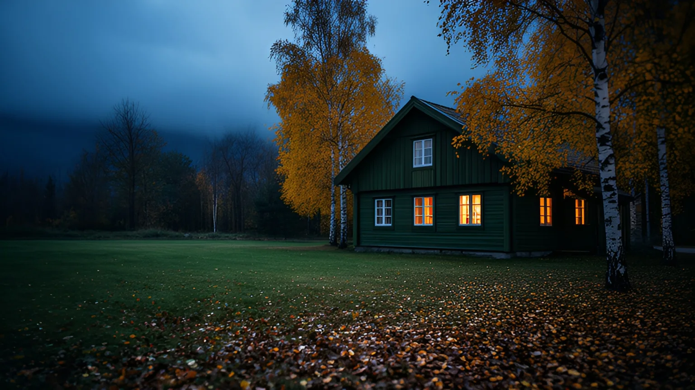
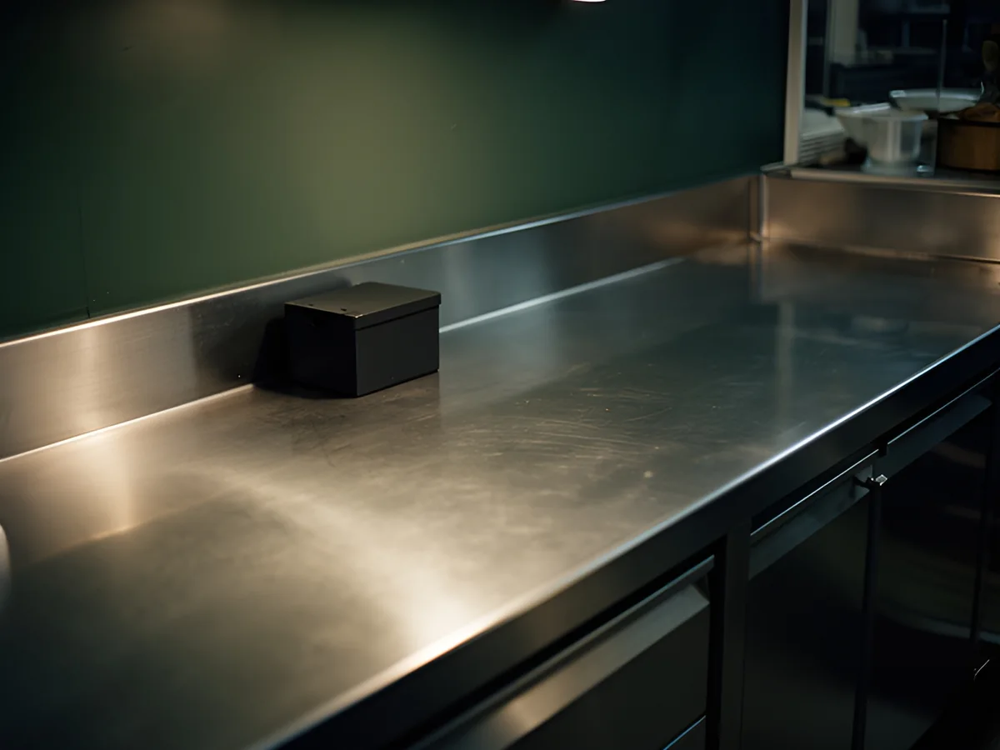

Kunnskap som holder skadedyrene ute.
Fagartikler, verktøy og en podkast om skadedyr i hus, hage og bedrift. Finn ut hva du har, hva du gjør først, og når du bør ringe en fagperson.
Kjenn igjen gjesten
De vanligste skadedyrene i norske hjem. Velg et dyr for kjennetegn, første tiltak og riktig utstyr.
Hele leksikonetArtsfoto fra Wikimedia Commons og iNaturalist med fri lisens. Fotograf og lisens står i hvert oppslag.
Aktuelt nå
Artiklene som passer årstiden – og landsdelen din, hvis du har latt oss finne deg.
Skadedyr i ditt fylke
Meldte funn, været akkurat nå, sesongen og artiklene som gjelder der du bor. Trykk på et fylke, eller la nettleseren finne deg.
Kartdata: Kartverket (CC BY 4.0).
Laster kart …
Finn ut hvilket dyr det er
- 1Ta eller velg et bilde
Skarpt og ovenfra, gjerne med en mynt ved siden av for størrelse.
Slipp bildet her eller trykk for å velgeJPG, PNG eller WEBP. Bildet lagres ikke. - 2Hvor fant du det?
Valgfritt, men det hjelper analysen.
- 3Få svar
Bildet sjekkes mot kjennetegnene i FHIs skadedyrhåndbok – først av en bildemodell, så av en egen kvalitetskontroll.
Du får forslag til art, hvor sikker vurderingen er, og hvilke kjennetegn den bygger på – med lenke til kilden.
Har du ikke bilde? Velg tegnene du har lagt merke til, så rangerer vi hvilke skadedyr som passer best.

Når hytta står tom i vinter
Musene har funnet vinterkvarter nå. Det viktigste er å følge med hver gang du er på hytta.
- Sjekk felleneTøm og sett dem tilbake langs veggene.
- Se etter ferske sporEkskrementer og gnag viser hvor de kommer inn.
- Ikke la mat bli igjenHeller ikke tørrvarer, fuglefrø eller dyrefôr.


Kryp & kunnskap
Ett skadedyr per episode: hvordan det lever, hvorfor det kommer inn, og hva som faktisk virker. Korte episoder du kan høre på veien.
Til podkastenSkadedyrsikring du kan dokumentere
For bakerier, restauranter, lager og borettslag: hva internkontrollen bør vise, hvordan du setter opp overvåking, og når du trenger en avtale med en skadedyrtekniker.

Forebygg før sesongen starter
Hva du kan møte i hus, hage og hytte, måned for måned – og når det lønner seg å forebygge. Inneværende måned er markert.
Høysesong Kan forekomme
Gratis å bruke
Når du vet hva du trenger
All handel skjer hos Skadedyrbutikken – nettbutikken for skadedyrkontroll.
Det folk lurer på
Finner du ikke svaret? Skriv til oss, så kan spørsmålet ditt bli neste artikkel.
Se alle spørsmåleneNår bør jeg ringe en skadedyrtekniker?
Hvis du ser rotter innendørs, mistenker veggedyr, har veps inne i en vegg, eller problemet kommer tilbake etter at du har tettet og satt feller. Også når du trenger dokumentasjon, for eksempel i en matbedrift.
Kan jeg kjøpe de samme midlene som fagfolk bruker?
Ikke alltid. Noen biocider er godkjent bare for profesjonelle brukere. Produktsiden i butikken viser hvem produktet er godkjent for.
Hjelper ultralydapparater mot mus?
Erfaringene er blandede. Det sikreste er å tette inngangene og bruke feller der musa ferdes.
Hvem står bak Kryp.as?
Guiden drives av folkene bak Skadedyrbutikken. Artiklene skal hjelpe først, og lenker til produkter bare der det gir mening.
Skadedyrbrevet
Ett kort brev i måneden om hva som er i sesong – og hva du bør gjøre før det blir et problem.